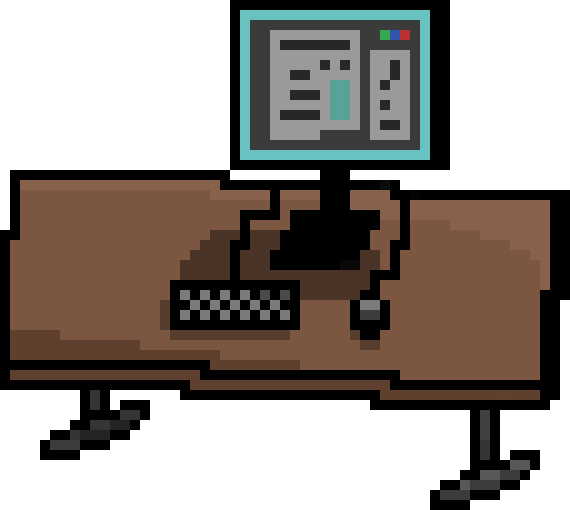
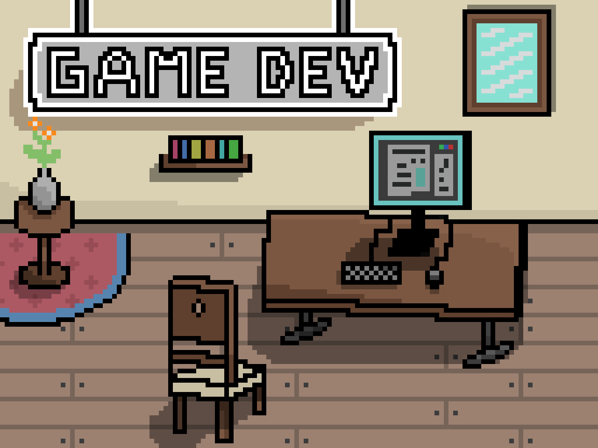

While reading the post you'll "unlock" parts of a Pixel Art image. Once you've read the entire post, you'll be rewarded with the full Pixel Art!
Unity is a game engine that was first released in 2005. It supports any gaming platform you can think of and is a very popular game engines. Some of the games you might know and have been made in Unity are Cuphead, Pokemon Go, Escape from Tarkov, Cities: Skylines and many more. Unity is also a very popular game engine among the indie game development community,
I'm not diving deep into the technical part of it, as that's not the points of the post, so a game engine is a tool/software that is made to create games. Most game engines include certain libraries, support programs, a suite of tools. rendering engine, animation and sound and much more.
But that's all technical stuff which is hard to understand if you're just starting, but don't worry, you'll learn about it as you go and as you'll need to research a certain topic more in depth in order to create a feature in your projects. What is usefull to know is that it's a very powerful software and there are many different game engines. Some of the most popular are Unity, Unreal Engine and Godot. Each one of them it's advantages and disadvantages. Make sure you do your reasearch on game engines before deciding on the one you want to use. Alternativly you can try them all and see which suits you best. This is a more viable options for you if you have some game development experience. However if you're new to game development and/or programming this might be a bit time consuming.
The way I've gone about it is doing research before diving into a game engine. I've decided to go with Unity and the two primary reasons were the flexibility of the software and the amount of study material avaliable on the internet.
-
So the bigger question should be: Do you like video games and want to make them? As with anything where you'll invest a lot of your time in, the top priority should be if you actually enjoy the process of learning and working in that field. While not always true, enjoying playing games is almost a foundation to enjoying game development as you've already established a passion for video games. With that you already know a lot of game mechanics, what is fun and what isn't, so you already have a general understanding of how video games work.
With your gaming experience you've probably said to your self a couple of times, why did they do it like this? I wish I could do this in the game! Asking your self these questions and thinking about game mechanics, story or art you've already started game design. If you write down these ideas what a game should have to be fun and unique, you've already done the first step towards making a game!
If you have no previous skills in programing, art or any other related field, you have to be ready to invest a lot of time into research and learning. Now there are going to be times when you'll want to give up as the process can be quite taxing, but if you enjoy learning about it you'll definitely get through.
The video game industry is growing rapidly and the amount of available jobs is huge and if you're looking for a job or for a new career, it's a great industry to get into.
Then there is a creative side to it, like mine. You like video games and you want to create new experiences where you're the game master and how the game is played is completely up to you. It's a unique feeling when you create an experience where the game is like you wanted and you see it bring joy to people.
Personaly, the second reason is why I got into game development. The second reason I started is because games can help people either through tough times are bring quality spare time activity. The escape from the real world can have a negative ring to it, but I think it's so unique as every game is different, that it's a positive thing as you can experience something only games can provide. Of course you shouldn't spend all of your time playing games but from time to time it's great to immerse yourself in a totally different universe.
Well, by reading this article you've already taken the first (or second if you've done what I wrote earlier) step. Now it's time for you to decide if you want to learn about a specific top or master a single skill or if you'd rather try making a game by your self and learn everything there is to game development.
I chose to learn everything, so I can make everything a game needs myself. In this blog I'll post a series of posts telling a story of my journey of learning game development and sharing how I learned specific skills. I'll also prepare a number of tutorials to help you get going. So reading this blog is a great way to learn. I'll cover every topic necessary so you can become a game developer.
Besides my blog there is a lot of great material on the internet. I suggest you first do your research for the field you're interested, so that you can make an informed decision on which tools you'll use and where should you start.
In the next post we'll dive into game engines, what they are and what role they play in game development (hint: huge). We'll explore different options and talk about alternatives
If you enjoyed and maybe learned something reading this, follow me on Twitter, so you'll be notified when the next post is uploaded.
